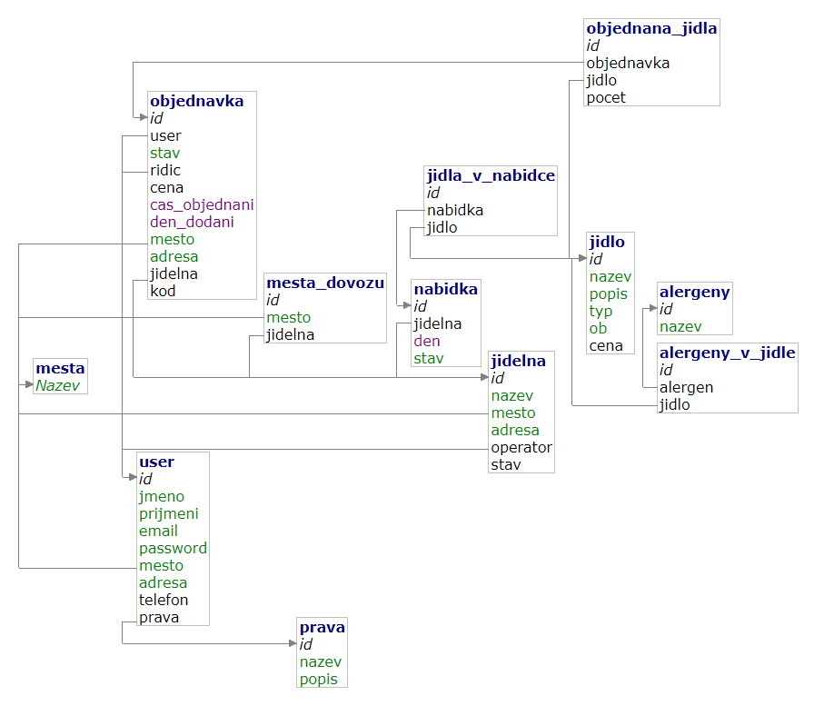

Jídelna
- Autoři
- Michal Jireš
xjires02@stud.fit.vutbr.cz - Návrh DB, programování všech php souborů
- Sahliger Radek
xsahli00@stud.fit.vutbr.cz -
popis činnosti v týmu
- Ďurovič Róbert
xdurov01@stud.fit.vutbr.cz -
Frontend - stylováni, úprava html
- URL aplikace
- http://www.stud.fit.vutbr.cz/~xautor01/IIS
- (pokud má aplikace více vstupních stránek, napište obdobně další URL)
Uživatelé systému pro testování
Uveřte prosím existující zástupce všech rolí uživatelú.
| Email | Heslo | Role |
|---|
| admin@jidelna.cz | admin | Administrátor |
| LadNov@jidelna.cz | heslo | Operátor |
| novak@jidelna.cz | heslo | Řidič |
| novy@jidelna.cz | heslo | Konzument |
(Diagram případú užití není nutné vkládat, pokud IS implementuje role a případy užití definované zadáním.)
Implementace
Stručná dokumentace k implementaci, která popisuje, které části projektu (např. PHP skripty) implementují jednotlivé případy použití.
Admin
- Admin/Accounts.php - Výpis všech uživatelů, kde admin může vyhledávat a následně si je rozkliknout
- Admin/Add_jidelna.php - Stránka pro vytváření nových jídelen, a přiřazení operátora pro nově vytvořenou jídelnu
- Admin/Jidelny.php - Výpis všech jídelen, může si je rozkliknout a změnit
Operátor
- Op/Add_jidlo.php - Přidá nové jídlo do databáze
- Op/Dat_zakazky.php - Stránka kde operátor uvidí nově příchozí zakázky, má možnost je rozkliknout a přiřadit řidiče
- Op/Jidelna.php - Detail jídelny, může jí měnit údaje (může změnit stav jídelny na Otevřená - Zavřená)
- Op/Manage_jidelnicek.php - Stránka kde se vypíše jídelníček pro určitý den (pokud je), operátor ho může změnit
- Op/Moje_jidelny - Výpis všech jídelen u kterých je přihlášený uživatel jako operátor, může je rozkliknout a dostat se do jidelna.php
Řidič
- Ridic/Zakazky.php - Jsou zde vidět zakázky, které jsou přihlášenému řidiči přiřazeny
Konzument
- Account/User.php - Výpis informací o useru
- Account/Manage_user.php - Formulář pro změnu informací v db
- Account/Moje_objednavky.php - Seznam objednávek přihlášeného uživatele
Obecné
- Account/Login.php - Pro přihlášení / odhlášení
- Account/Register.php - Pro registraci
- Index.php - Úvodní stránka kde uživatel uvidí vypsané jídelny, které jsou právě v provozu
- Jidlo/Jidelnicek.php - Jídelníček na jeden den jedné jídelny
- Jidlo/Jidlo.php, Jidlo/Objednat.php - Soubory pro objednání jídla, kde si uživatel postupně vybere kolik jakého chce jídla a následně vyplní kontaktní údaje
- Jidlo/Objednavka.php - Pokud je uživatel přihlášený očekává v url parametr obj s id objednávky, kterou chce vidět. Pokud není přihlášený zobrazí se textové pole do, kterého může vložit kód objednávky, kterou chce sledovat
Databáze

Zde vložte grafické schéma relační databáze (tabulek v databázi).
Instalace
Stručnì popište:
- postup instalace na server,
- softwarové požadavky (verze PHP apod.),
- jak rozbalit, konfigurovat, inicializovat databázi, ...
Známé problémy
Zde popište, které body zadání nejsou implementovány a z jakého dúvodu. Např. „Z časových dúvodú nebyla implementována správa uživatelú.” Pomúžete tím zrychlit hodnocení, když neimplementované funkce nebudeme muset dlouze hledat.